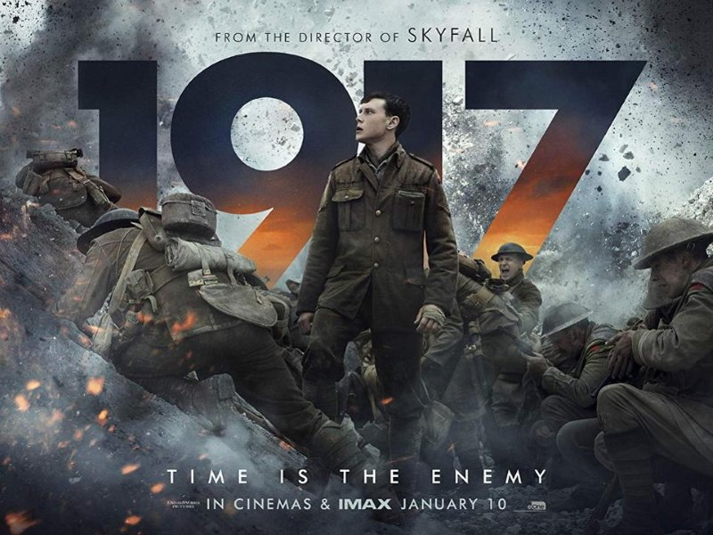
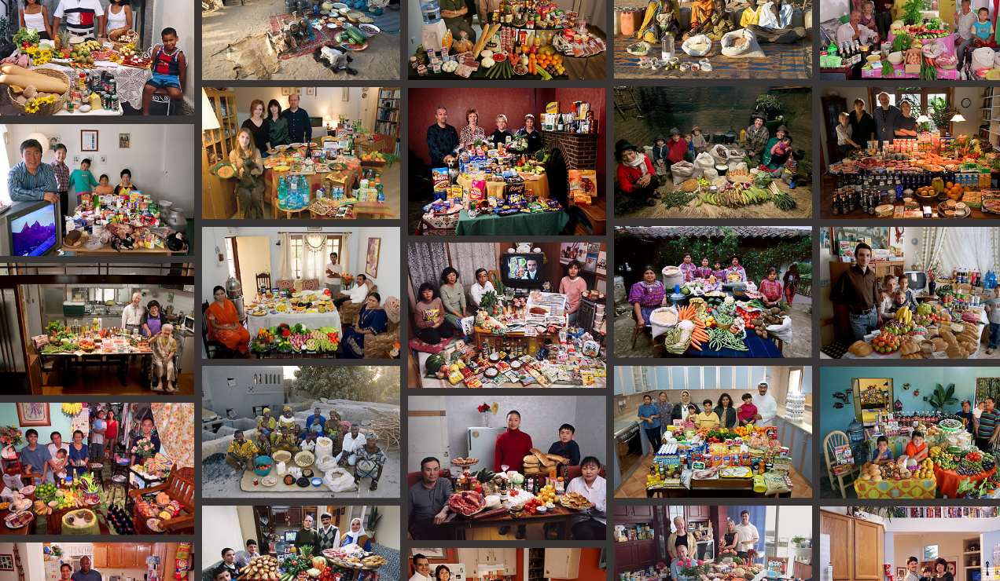
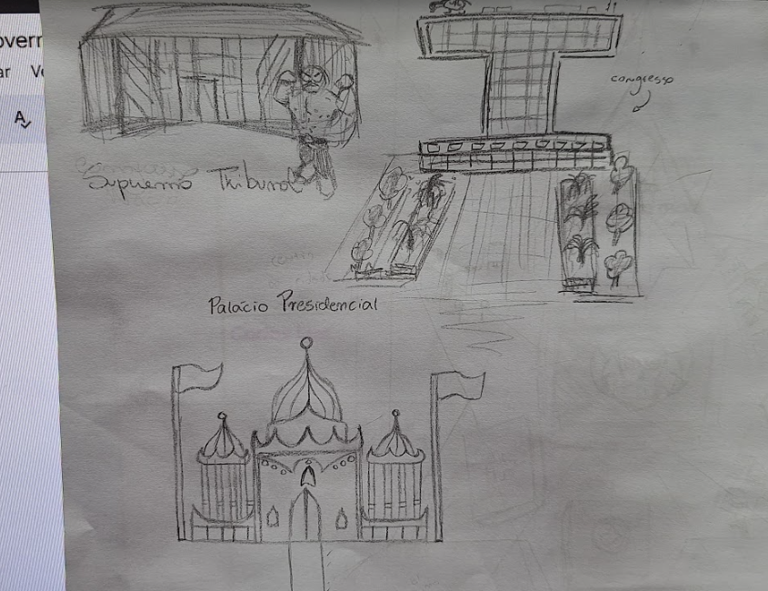

Introdução à Geopolítica

Apresentação em grupo sobre um país, informando dados confiáveis e atualizados.
Imperialismo no séc. XIX (Neocolonialismo)

Pesquisa sobre um país que sofreu com o processo de colonização após a 2ª Revolução Industrial por meio de fotos, mapas e desenhos.
A Grande Guerra (Filme 1917) 
Análise do filme "1917" sobre a Primeira Guerra Mundial.
Hungry Planet: What the world eats 
Atividade em grupo onde foi analisada imagens do projeto “Hungry World” e refletimos sobre as disparidades globais, a distribuição de recursos, e como fatores como renda, cultura, e localização geográfica impactam a dieta de cada família.
Processo Criativo
Para desenvolver essa atividade, tivemos que conectar visualmente o impacto das escolhas alimentares com os contextos sociais e econômicos do México, sendo abordado informações muito importantes de cultura, geografia, política, sociedade e economia única do país.Contribuição positiva para a formação
A atividade contribuiu para maior conhecimento e conscientização das diferenças alimentares no mundo por nos fazer refletir sobre nosso próprio consumo e responsabilidade de ter práticas alimentares mais sustentáveis. Competências e Habilidades: C4 H26 H27Urbanismo e cultura no começo do século XX

Pesquisa feita a partir de imagens do banco de dados do site “Brasiliana Fotográfica”. Aborda características da arquitetura de construções apresentadas nessas fotos do século XX e seu contexto.
Processo criativo
Durante a pesquisa, busquei contextualizar cada construção dentro de seu cenário histórico, tendo claro o papel que desempenhavam na vida urbana e como refletiam as tendências culturais e sociais da época. Essa abordagem permitiu uma análise visual que vai além da estética, destacando a função social e simbólica da arquitetura.Contribuição positiva para a formação
Pude ampliar meu conhecimento sobre a história do urbanismo no Brasil e desenvolvi uma maior apreciação pela preservação do patrimônio cultural. Competências e Habilidades: C4 H22 H24Guerra Fria

Apresentação no Canva em dupla, onde abordamos sobre a Guerra Fria, como conflitos, disputas, acordos e as dinâmicas ideológicas que marcaram esse período. O objetivo era entender como Estados Unidos e União Soviética influenciaram e impactaram o cenário global.
Competências e Habilidades: C6 H39 H40 C5 H28 H30 H32República Liberal 
Atividade em grupo em que criamos uma "nova" capital para o Brasil, tendo aspectos como nome, localização, planejamento urbano e características como cultura, saúde, etc. Também foi realizada uma pesquisa sobre cada presidente do período da 2ª República.
Competências e Habilidades: ...